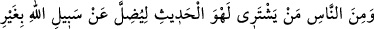
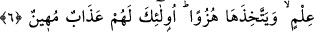
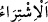
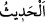

6. İnsanlardan öylesi var ki, herhangi bir ilmî delile dayanmadan Allah yolundan
saptırmak ve sonra da onunla alay etmek için boş lafı satın alır. İşte onlara rüsvay
edici bir azap vardır.
“İnsanlardan öylesi” bazısı “var ki, herhangi bir ilmî delile dayanmadan” yâni, ne
satın aldığını ve neyi tercih ettiğini ya da boş sözü Kur’ân okumakla değiştiği için o
ticaretin ne olduğunu bilmediği halde insanları “Allah yolundan” yâni O’na ulaştıran
hak dinden “saptırmak” çevirmek ya da sahte kitaplar yüzünden Allâh’ın hakka erdiren
Kitabı’nı okumalarına mani olmak “ve sonra da onunla” Allâh’ın dosdoğru yoluyla
“alay etmek için boş lafı” aslı olmayan sözler, boş efsaneler, gülünç laflar ve anlamsız
konuşmalar gibi hiçbir faydası olmayıp insanı önemli işlerinden alıkoyan şeyleri “satın
alır.”
“__WORD__, parayı verip malı satın almaktır. “__WORD__ ise malı verip parayı almaktır.
Burada satın almanın mânâsı, değiştirmek ve tercih etmektir.
“__WORD__ az veya çok söz için kullanılır. Çünkü söz azar azar oluşup ortaya çıkar.
Ebû Osmân (r.h.) şöyle der: “Allâh’ın kitabından, Rasûlullah (s.a.)’in sünnetinden ve
sâlih kulların örnek hal ve davranışlarından başka her söz lehvdir; boş ve anlamsızdır.”
Arâisü’l-Beyân’da şöyle geçer: “Lehvü’l-hadîs” ifâdesinde iksir, sihir, zındıkların
asılsız ve bâtıl sözleri gibi felsefe ilimlerini taleb etmeye işâret edilmiştir. Çünkü
bunların hepsi halkın sapıtmasına sebeptir.”
et-Te’vîlâtü’n-Necmiyye’de denilir ki: “Konuşulması insanı Allah’tan alıkoyan ve
dinlenilmesi insanı Allah’tan perdeleyen bütün sözler “boş laf”tır.
Müfessirlerin çoğuna göre bu âyet, Nadr b. Hâris b. Kelde hakkında inmiştir. O, gönlü
kâfir, mezhebi/yolu küfür olan bir kimseydi. Allah Rasûlü’ne çok düşmanlık beslerdi.
Rasûlullah (s.a.) onu Bedir savaşından sonra hakkında ölüm kararı çıkartarak yakalatıp
öldürtmüştür.
Rivâyete göre Nadr b. Hâris ticaret için İran’a gitmiş, Kelîle ve Dimne hikâyelerini,
Rüstem, İsfendiyâr ve İran hükümdarlarına âid masalları alıp getirerek toplantılarda
Kureyş halkına anlatmaya başlamış ve şöyle demişti: “Muhammed size Âd ve Semûd’la
ilgili kıssaları anlatıyor. Ben de size Rüstem ve İsfendiyâr’ın haberlerini anlatıyorum.”
Kureyş halkı da onun bu sözünden hoşlanıyor ve Kur’ân dinlemeyi terk ediyordu. Buna
göre âyetteki “satın alma” gerçek mânâda meydana gelmiş olmaktadır. Çünkü Nadr
malı karşılığında içinde boş sözler ve bâtıl efsaneler bulunan kitapları satın almıştır.
Şu bir gerçek ki, başkasını saptıran, aynı zamanda kendisi de sapmış olur.
“İşte onlara” yâni boş sözü satın alıp insanları saptıranlar için, bâtılı hakka tercih
ederek ve insanları ona teşvik etmekle hakkı değersiz gördükleri için “rüsvay edici bir
azap vardır.” Yâni onlar için dünyâda esâret ve katil gibi hor ve zelil edici azap;
âhirette de rezil rüsvâ edici azap vardır.